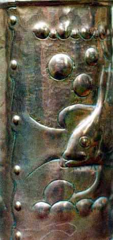

Identifying Newlyn Copper is not as simple as some sellers might wish to convince their potential buyers. Probably about half of the items from the Newlyn School are stamped NEWLYN and the pricelist for 1900 states that "The stamp NEWLYN guarantees handmade throughout;
Six variations on size of stamp have been noted and the larger size stamps are found on pieces considered to be from the pre first world war period. In the early days, pieces were signed with the makers name, sometimes dated, sometimes with the addition of 'worked by...' or 'designed by...'sometimes marked 'Newlyn Industrial Class Penzance'.
The Newlyn Art Metal Industry as it was known in 1900 listed over 50 items in the price list including vases, trays, photograph frames, rose bowls, cigarette boxes, and tobacco jars all available in copper, brass, and pewter. Items made to order included overmantels, fenders, kerbs, picture frames, decorative panels, challenge shields, tea and coffee pots, and door furniture. Kettles, tea urns and kitchen equipment was also made. The most collected pieces however are those bearing repousse designs.
Design and Construction
The method of repousse work is an ancient craft, its revival in the late nineteenth century was described by a visitor to the Guild of Handicraft as: "The method of this class of work is simple. If the nature of a plate or disc, the piece of copper is laid on a bed of pitch or lead, and hammered from the front or back ..with a mallet and punches of various sizes in accordance with the forms or the designs being executed".

The practice of beating copper on lead rather than pitch was developed by Pearson and was regarded as a trade secret of the Newlyn School. Most work was done in copper, but brass, and pewter were also used. Design of structure and decoration tended to be led by Pearson initially and then by Mackenzie. One of the key characteristics of Newlyn is the quality of construction and finish, well fitting lids, and particular attention to seams which were riveted on curved edges. ( see illustration.) The decorative treatment of seams and hinges and hinges was in keeping with principles of Arts and Crafts in that the method of construction was displayed as a decorative feature.
Popular Designs employed include fish of various types, dogfish, gurnards and 'finny' fish feature on some of the larger pieces, and there are Carp, John Dory, crabs , Octopus and fictional sea creatures featured on some items. Other patterns include views of Newlyn, Luggers in the Harbour, St Michaels Mount, apples, medlars, other fruit, and flowers. Sea birds, seaweed and sea shells were also used. One of the most enjoyable qualities ofNewlyn copper is the way designs are created in relation to the shape of the object itself; fish swirl around the outer surface of a vase with seaweed and bubbles giving a sense of movement. Fish designs do seem to be the most popular with coolectors at the moment and there are many different varieties to collect. In some designs the fish appear in motion in others they are posed or arranged in a symmetrical design. In some cases fish are given character with grotesque or amusing expressions sometimes with a hopeful look, reminiscent of fish in designs by William De Morgan.
Collecting Newlyn
The days when Newlyn could be picked up for a few pounds are gone, it is now one of the hottest areas of collecting and prices are going up. Auctions are the best place to start your search, though pieces do appear for sale at specialist dealers and on internet auctions sites. Be wary of pieces sold as 'probably' Newlyn, don't pay Newlyn prices unless your certain your getting the real thing. Expect to pay several hundred pounds for stamped items with designs particularly items with a function eg vases, jugs, trays, inkwells, candle sconces. Small plates, pen trays, matchbox covers might be available at less than two hundred pounds depending on condition and design. Avoid pieces that have been regularly polished as this wears away the sharpness of design. Many collectors prefer items with 'patina' which is a deep reddish, brown or dark green colour which is the result of many years of gentle ageing indoors. Blackened items or those where the surface is pitted may have serious corrosion which should not be mistaken for patina. Corrosion, splitting and distortion of copper will detract from the value.
Cleaning copper with any abrasive, acid or alkali is not recommended by the British Museum. They recommend removal of verdigris with a toothpick and solvent such as acetone, then no further treatment other than gentle rub with soft cloth, then microcrystaline wax.
Repair and restoration of Newlyn is best left to craftsmen who are skilled at working with copper. Knocking out a simple dent or twist can look easy, but often ends with a series of many smaller dents as a result attempts to beat back into shape. Avoid the temptation to solder, drill or hammer Newlyn Copper pieces, which need repair. Try not to buy damaged pieces unless your happy to live with their condition. Copper, like pottery cannot be unbroken once it has been damaged